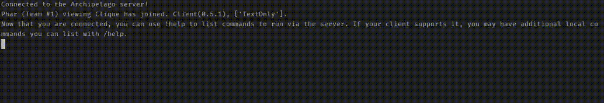

Creating Your Client
Let's start off by creating a simple client that can connect to an Archipelago server, and listen for message events.
If you haven't already, generate an Archipelago room you can connect to for testing purposes. For all examples therein, I'll be using "Phar" as the player and "Clique" as the game, but you can replace these values with what's appropriate for your situation.
Create a new file in your project directory called client.js and add the following code:
import { Client } from "archipelago.js";
// Create a new instance of the Client class.
const client = new Client();
// Set up an event listener for whenever a message arrives and print the plain-text content to the console.
client.messages.on("message", (content) => {
console.log(content);
});
// Login to the server. Replace `archipelago.gg:XXXXX` and `Phar` with the address/url and slot name for your room.
// If no game is provided, client will connect in "TextOnly" mode, which is fine for this example.
client.login("archipelago.gg:XXXXX", "Phar")
.then(() => console.log("Connected to the Archipelago server!"))
.catch(console.error);
Now run your code in your runtime of choice, and you should see the following output in your console:
Connected to the Archipelago server!
Phar (Team #1) viewing Clique has joined. Client(0.5.1), ['TextOnly'].
Now that you are connected, you can use !help to list commands to run via the server. If your client supports it, you may have additional local commands you can list with /help.
If you connect with another client (or via the server console) and send a message, you should see it come in as well:
[Server]: Hello, world!
Phar: Hello, multi-world*! ftfy
A more feature rich, text client...
This is cool and all, but not very feature rich, since we can't interact back with the code we have, so let's utilize some more methods to communicate back.
Node-based Example
import readline from "node:readline";
import { Client } from "archipelago.js";
// Using the node readline module, create an interface for intercepting any user input.
const rl = readline.createInterface({ input: process.stdin, output: process.stdout, terminal: false });
const client = new Client();
client.messages.on("message", (content) => {
console.log(content);
});
// Add an event listener for when a "line" is entered into the standard input (e.g., the console/terminal window).
rl.on("line", async (line) => {
// Send the input!
await client.messages.say(line)
});
client.login("archipelago.gg:XXXXX", "Phar")
.then(() => console.log("Connected to the Archipelago server!"))
.catch(console.error);
Then running our code we should get something like so:
